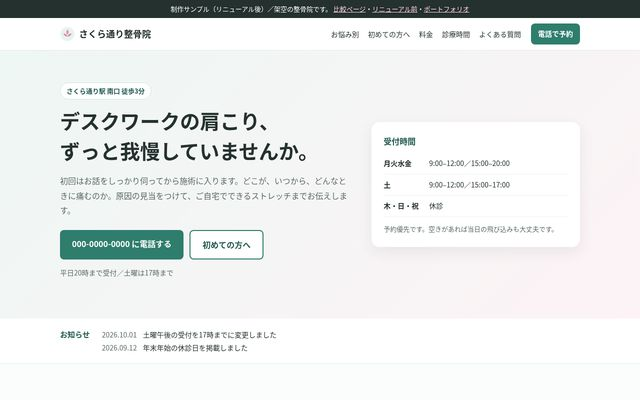

小さなお店や個人の方の
ホームページを、作り直すお手伝いをしています。
「スマホで見ると崩れている」「何年も更新していない」「WordPressの一部だけ直したい」といったご相談に対応しています。ここでは、作り方や仕上がりの雰囲気を見ていただくために用意した制作サンプルを掲載しています。
ご注意：このページのサンプルは、すべて架空の店舗・医院・事業者を想定して制作したものです。実在のお客様の制作実績ではありません。店名・住所・電話番号・料金も例として記載しています。
制作サンプル
対応できること
ホームページのリニューアル
今あるサイトの内容を整理して、スマホでも読みやすい形に作り直します。文章の手直しや、ページ構成のご提案もします。
LP（1ページのサイト）制作
サービスの紹介から問い合わせまでを1ページにまとめます。原稿がない場合は、ヒアリングをもとにたたき台を作ります。
WordPressの修正
表示崩れの修正、文章・画像の差し替え、お問い合わせフォームの設置、プラグインの整理など、部分的な修正にも対応します。
表示速度・使いやすさの改善
画像の圧縮、不要な読み込みの削除、文字の大きさやボタンの押しやすさなど、細かいところを見直します。
料金の目安
| 内容 | 料金（税込） | 納期の目安 |
|---|---|---|
| 既存サイトの部分修正（文言・画像差し替え、表示崩れ1か所など） | 5,000円〜 | 1〜3日 |
| LP制作（1ページ・スマホ対応） | 15,000円〜 | 5〜7日 |
| ホームページリニューアル（5ページ程度まで） | 40,000円〜 | 2〜3週間 |
ページ数や原稿・写真のご用意状況によって変わります。まずは今のサイトのURLと、困っていることを教えてください。お見積もりは無料です。
進め方
- 今のサイト（または参考にしたいサイト）と、ご要望を伺います。
- 構成案とお見積もりをお送りします。ここで内容と金額を確定します。
- 制作して、確認用のURLでご覧いただきます。修正は2回まで料金に含みます。
- 公開作業を行います。サーバーやドメインの設定もお手伝いできます。